The SLIC/Gibson/CPEC/SLiCE assembly j5 output file is a CSV file that contains all of the information resulting from the SLIC/Gibson/CPEC/SLiCE assembly design process. The first line in the file is a header line that just serves to identify the assembly method selected (e.g. "SLIC/Gibson/CPEC"), as well as the version of j5 used to generate the assembly (e.g. "v0.1alpha") and the date that the assembly was designed (e.g. "4/6/2010").
Displays the j5 parameters selected for the assembly design process, which were dictated by the j5 parameters file.
Here is an example first line header and Assembly Parameters subsection (truncated after the fourth column, stylized for clarity):
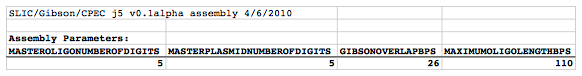
Depending on the particular assembly, a number of warning messages may follow the Assembly Parameters subsection. These include warnings that the master plasmids list file is empty (has yet to contain any plasmids), in which case the first plasmid name will be automatically generated using the first three characters of the master plasmids list file file name. The same is true of the master oligos list file. Additional warnings will be issued if parts defined in the parts list file imply that one or more of the master sequences are circular (the part start bp is greater than the part end bp).
Here is an example of the warning messages that may follow the Assembly Parameters subsection:
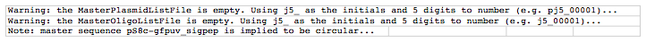
displays the parts list as dictated by the parts list file.
ID Number column fields: The parts in the parts list file are enumerated starting with "0".
Length column fields: The length of each part (in bp) is computed based on their definitions in the parts list file.
Sequence column fields: The sequence of each part is extracted from the master sequences based on their definitions in the parts list file.
Other column fields are described in the parts list file documentation section.
Here is an example Non-degenerate Part IDs and Sources subsection (stylized for clarity):
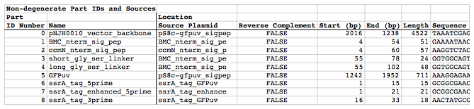
Depending on the particular assembly, a number of warning messages may follow the Non-degenerate Part IDs and Sources subsection. These include warnings originating from either primer design with Primer3, or from likely mispriming events identified by significant BLAST hits (with annealing Tms higher than the threshold set in the j5 parameters file). If the warning originates from Primer3, it will explain why there was difficulty finding an acceptable set of primers to amplify a target part (identified by its target part order number as displayed in the Target Part Ordering/Selection/Strategy subsection, below, e.g. "Target Part 0"). The explanation will indicate information such as how many different primers were considered, and in turn, why each of them was rejected (e.g. "Right primer explanation: considered 19; low tm 18; long poly-x seq 1; ok 0"). In the instance that Primer3 is unable to find an acceptable set of primers, j5 will suggest to Primer3 to relieve the primer design constraints that are leading to the rejection of all considered primers (e.g. "Ignoring: min-tm too-many-poly-x..."), while still preferring primers that minimize the violation of design constraints. For more details about this process, please see the Brief survey of j5 functionality. If the warning message originates from the identification of likely mispriming events, it will explain where the putative mispriming event occurs in the template sequence, which bps of the designed primer is present in the misprimed sequence, and the estimated Tm of the primer/template mispriming interaction (e.g. "Warning: mispriming (bps: 5256..5268; strand: 1; query bps: 14..26 (of 26); Tm: 54.009)"). The information contained within these warning messages is useful in that it may suggest an explanation for a j5-designed PCR reaction failure, or may suggest that using an alternate template sequence for the PCR reaction (that lacks the mispriming sequence) would be preferable.
Here is an example warning message that may follow the Non-degenerate Part IDs and Sources subsection (double-click to see enlarged version):
displays the target part order list as dictated by the target part order list file, along with the j5 assigned assembly strategy for each target part.
Order column fields: The target part ordering enumerated starting with "0".
ID Number column fields: The part ID Number corresponding to the parts list displayed in the Non-degenerate Part IDs and Sources subsection, above. Note that the same part may be used more than once in a given assembly, so the same part ID Number may be listed twice (or more) for two (or more) slots in the assembly order (although the orientation of the part and its assembly strategy might differ for the two different assembly slots). Note also that all parts listed in the Non-degenerate Part IDs and Sources subsection are not necessarily included in the assembled sequence, and as such will be absent from the target part ordering list.
The Name and Direction column fields are described in the target part order list file documentation section.
Strategy column fields: The j5 assigned assembly strategy for each target part. For descriptions of each strategy, see the target part order list file documentation section description of "Forced Assembly Strategy?" column fields. Note that post-assembly design, empty, or "unspecified" fields will no longer apply. Note that two contiguous "Direct Synthesis" strategy fields may or may not imply a contiguous direct synthesis piece spanning the two target parts, see the Direct Synthesis subsection, below.
Here is an example Target Part Ordering/Selection/Strategy subsection (stylized for clarity):
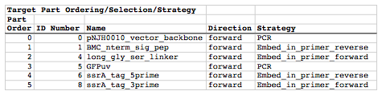
Depending on the particular assembly, a number of warning messages may follow the Target Part Ordering/Selection/Strategy subsection. These include warnings originating from either CPEC primer design with Primer3, or from likely CPEC mispriming events identified by significant BLAST hits (with annealing Tms higher than the threshold set in the j5 parameters file). If the warning originates from Primer3, it will explain why there was difficulty finding an acceptable set of CPEC primers to amplify an assembly piece (identified by its assembly piece ID Number as displayed in the Assembly Pieces (SLIC/Gibson/CPEC/SLiCE) subsection, below, e.g. "Assembly Piece 0"). The explanations are identical to those described for the warnings possibly following the Non-degenerate Part IDs and Sources subsection, above. For more details about the CPEC primer design process, please see the Brief survey of j5 functionality. If the warning message originates from the identification of likely CPEC mispriming events, it will explain which CPEC primer is mispriming (e.g. "Assembly Piece 2 CPEC right primer"; this particular CPEC primer would be the right primer designed to amplify assembly piece 2), which assembly piece the CPEC primer misprimes (e.g. "with respect to Assembly Piece 0"), where the putative mispriming event occurs in the assembly piece sequence, which bps of the designed CPEC primer is present in the misprimed sequence, and the estimated Tm of the CPEC primer/assembly piece mispriming interaction (e.g. "Warning: mispriming (seq: TGGCTGCCGCGCGGCA; bps: 13..28; strand: -1; query seq: TGGTGCCGCGCGGCA; query bps: 10..24 (of 26); Tm: 67.241)"). The information contained within these warning messages is useful in that it may suggest an explanation for a j5-designed SLIC/Gibson/CPEC/SLiCE assembly failure, and is also useful to determine if and where likely SLIC/Gibson/CPEC/SLiCE assembly piece incompatibilities arise, identifying sequences at the termini of assembly pieces that are problematic, and explain the j5 suggested hierarchical assemblies to circumvent these incompatibilities (see the Incompatibilities between Assembly Pieces subsection, below). This information can be used in an iterative process, to refine the assembly design to minimize assembly piece incompatibilities, as well as ensure proper neighbor assembly piece priming/annealing.
Here is an example warning message that may follow the Target Part Ordering/Selection/Strategy subsection; double-click to see enlarged version:
displays the likely assembly piece incompatibilities.
Assembly Piece column fields: The assembly piece ID Number as displayed in the Assembly Pieces (SLIC/Gibson/CPEC/SLiCE) subsection, below.
Left End column fields: If this assembly piece at its left end (the end that will connect with the previous assembly piece) is incompatible with any of the assembly pieces, the incompatible assembly pieces will be listed here, delimited by a space character (e.g."1 3 4"); otherwise, if there are no incompatibilities, "NONE" will be displayed. The left end of this assembly piece is effectively the right CPEC primer of the previous assembly piece, since during CPEC assembly this assembly piece's left end will prime the right end of the previous assembly piece for polymerase extension (see SLIC, Gibson and CPEC assembly methods, for more information). If there is an incompatibility, information concerning it should be present in the warnings following the Target Part Ordering/Selection/Strategy subsection, above. For example, if the left end of assembly piece 3 is incompatible with assembly piece 0, we would find a warning message concerning "Assembly Piece 2 CPEC right primer design (with respect to Assembly Piece 0)". Note that if the incompatibility arises due to (CPEC) mispriming an internal portion of an assembly piece (i.e. not annealing to the termini of the assembly piece), this will likely only affect CPEC assembly, and not SLIC or Gibson assembly. j5 conservatively assumes that all incompatibilities will be problematic, and therefore suggests hierarchical assemblies accordingly.
Right End column fields: Analogous to the Left End column fields, described immediately above. To flush out the analogy: the right end of this assembly piece is effectively the left CPEC primer of the next assembly piece, since during CPEC assembly this assembly piece's right end will prime the left end of the next assembly piece for polymerase extension; if the right end of assembly piece 1 is incompatible with assembly piece 0, we would find a warning message concerning "Assembly Piece 2 CPEC left primer design (with respect to Assembly Piece 0)".
Here is an example Incompatibilities between Assembly Pieces subsection (stylized for clarity):
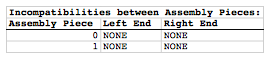
displays the suggested hierarchical assemblies, in the case of assembly piece incompatibilities.
Contig column fields: The hierarchical assembly contigs (sets of contiguous assembly pieces that will be assembled together in isolation as an preliminary step enroute to assembling the entire contruct) enumerated starting with "0". The set of all hierarchical assembly contigs contains all of the assembly pieces, and no assembly piece is present in more than one contig.
Assembly Pieces Contained column fields: The assembly pieces contained within this contig, delimited by a space character (e.g. "1 3 4").
Here is an example Suggested Assembly Piece Contigs for Hierarchical Assembly subsection (stylized for clarity):
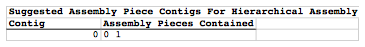
Note that in this example, there are no incompatibilities, so there is only one contig that contains all of the assembly pieces.
displays the direct synthesis pieces that will be required for the assembly.
ID Number column fields: The direct synthesis pieces are enumerated starting with "0".
Name column fields: The direct synthesis piece name prefix ("ds" followed by initials followed by a number) is generated as described in the master direct syntheses list documentation.
First Target Part column fields: The first target part in the Target Part Ordering/Selection/Strategy subsection above, that is embedded within the direct synthesis piece.
Last Target Part column fields: The last target part in the Target Part Ordering/Selection/Strategy subsection above, that is embedded within the direct synthesis piece.
Length column fields: The length of the direct synthesis piece in bps.
Cost column fields: The cost to synthesize the direct synthesis piece (in $USD by default), given the values dictated by the j5 parameters file.
Sequence column fields: The sequence of the direct synthesis piece.
Here is an example Direct Synthesis subsection (stylized for clarity):
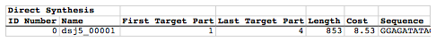
Depending on the particular assembly, a number of warning messages may follow the Direct Synthesis subsection. These include warnings originating from either primer design with Primer3, or from likely mispriming events identified by significant BLAST hits (with annealing Tms higher than the threshold set in the j5 parameters file). If the warning originates from Primer3, it will explain why there was difficulty finding an acceptable set of primers to amplify a direct synthesis piece (identified by its ID Number as displayed in the Direct Synthesis subsection). The explanation will indicate information such as how many different primers were considered, and in turn, why each of them was rejected (e.g. "Right primer explanation: considered 19; low tm 18; long poly-x seq 1; ok 0"). In the instance that Primer3 is unable to find an acceptable set of primers, j5 will suggest to Primer3 to relieve the primer design constraints that are leading to the rejection of all considered primers (e.g. "Ignoring: min-tm too-many-poly-x..."), while still preferring primers that minimize the violation of design constraints. For more details about this process, please see the Brief survey of j5 functionality. If the warning message originates from the identification of likely mispriming events, it will explain where the putative mispriming event occurs in the direct synthesis piece, which bps of the designed primer is present in the misprimed sequence, and the estimated Tm of the primer/template mispriming interaction (e.g. "Warning: mispriming (bps: 5256..5268; strand: 1; query bps: 14..26 (of 26); Tm: 54.009)"). The information contained within these warning messages is useful in that it may suggest an explanation for a j5-designed direct synthesis piece PCR amplification failure, or may suggest that breaking up the direct synthesis piece into multiple pieces, through the use of direct synthesis firewalls (see the target part order list file documentation section for more information), (to avoid the presence of a mispriming sequence in a direct synthesis piece to be amplified) would be preferable.
Here is an example warning message that may follow the Direct Synthesis subsection:
displays the oligos that will be required for the assembly.
ID Number column fields: The oligos are enumerated starting with "0".
Name column fields: The oligo name prefix (initials followed by a number) is generated as described in the master oligos list file documentation. The next portion of the oligo name is generated from the name of the part that the oligo primes for PCR, and additionally from the names of any parts that may be embedded within the oligo. Each part name is enclosed by parenthesis, and any two part names are separated by an underscore (e.g. "(longgly_ser_linker)(GFPuv)"). The names of the parts may be appended with "_rc" to indicate that the target part will be assembled in the reverse direction. The ordering of the part names with in the oligo name corresponds with the target ordering of the parts in the final assembly. Alternatively, the next portion of the oligo is the name of the direct synthesis piece that the oligo primes for PCR. The oligo name is appended with "_pure_forward" to indicate a forward primer that does not contain flanking sequence that does not necessarily anneal to the template, "_forward" to indicate a forward primer that may contain 5' flanking sequence that may not anneal to the template; "_pure_reverse" and "_reverse" are analogous, referring to the reverse primers.
First Target Part column fields: The first target part in the Target Part Ordering/Selection/Strategy subsection above, that is either primed by, or is embedded within, the oligo. If the oligo primes a direct synthesis piece for PCR, this field will be empty.
Last Target Part column fields: The last target part in the Target Part Ordering/Selection/Strategy subsection above, that is either primed by, or is embedded within, the oligo. If the oligo primes a direct synthesis piece for PCR, this field will be empty.
Length column fields: The length of the oligo in bps.
Tm column fields: The computed Tm (in degrees C) of the full oligo.
Tm (3' only) column fields: The computed Tm (in degrees C) of only the 3' end of the oligo that is designed to anneal to the template (i.e. the Tm calculation of the oligo after all 5' flanking sequence has been removed).
Cost column fields: The cost to synthesize the oligo (in $USD by default), given the values dictated by the j5 parameters file.
Sequence column fields: The sequence of the oligo.
Here is an example Oligo Synthesis subsection (stylized for clarity; double-click to see enlarged version):
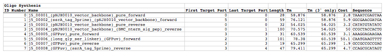
Depending on the particular assembly, a number of warning messages may follow the Oligo Synthesis subsection. These include two types of warning messages: 1) warnings concerning Tm calculations for oligos longer than the Primer3 limit (currently 36 bp); and 2) warnings concerning the presence of poly-Gs in oligos. Since Primer3 can only confidently compute Tms up to a certain length, the presented Tm for a full-length oligo longer than the limit is for the 3' end of the oligo up to the Primer3 length limit. Warning messages are accordingly provided for each oligo longer than the Primer3 length limit, indicating the Tm for the full length oligo as predicted by BioPerl (which may or may not be more accurate than the truncated Primer3 approximation). Since it may be difficult to synthesize DNA oligos with 5 or more Gs in a row (i.e., long poly-G sections), warning messages are issued accordingly.
Here is an example set of warning messages that may follow the Oligo Synthesis subsection:
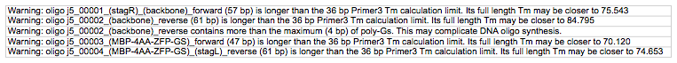
displays the annealed oligos pairs (if any) that will be required for the assembly.
ID Number column fields: The pairs of annealed oligos are enumerated starting with "0".
ID Number column fields: The top oligo ID Number as presented in the Oligo Synthesis subsection above.
Name column fields: The top oligo name as presented in the Oligo Synthesis subsection above.
ID Number column fields: The bottom oligo ID Number as presented in the Oligo Synthesis subsection above.
Name column fields: The bottom oligo name as presented in the Oligo Synthesis subsection above.
First Target Part column fields: The first target part in the Target Part Ordering/Selection/Strategy subsection above, that is contained within the annealed oligos.
Last Target Part column fields: The last target part in the Target Part Ordering/Selection/Strategy subsection above, that is contained within the annealed oligos.
Tm column fields: The computed Tm (in degrees C) of the annealed oligos. Note: the Tm is for the annealing portion of the total sequence (see below), and does not include any 5' single-stranded overhang sections.
Length column fields: The total length of the annealed oligos in bps. This includes 5' single-stranded overhangs (if any).
Sequence column fields: The sequence of the annealed oligos. This includes the 5' single-stranded overhangs (if any).
Here is an example Annealed Oligos Synthesis subsection (stylized for clarity; double-click to see enlarged version):
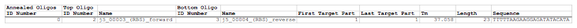
displays the PCR reactions that will be required for the assembly.
ID Number column fields: The PCR reactions are enumerated starting with "0".
Primary Template column fields: The sequence that serves as the primary template for the PCR reaction. By default, the original sequence template will be the primary template. However, when the user requests that j5 output "pure" primers (see the Brief survey of j5 functionality for more information), j5 suggests first amplifying from the original template using "pure" primers, see the Oligo Synthesis subsection above, and then re-amplifying the "pure" PCR product with the full-length primers (potentially containing 5' flanking sequence). Thus, the primary template for the "pure" PCR reactions will be the original sequence template (e.g. a plasmid), and the primary template for the re-amplification with full length primers will be the related "pure" PCR reaction product. If the PCR reaction is amplifying a direct synthesis piece, the name of the direct synthesis piece (e.g. "dsj5_00001") will be displayed in this field.
Secondary Template column fields: The sequence that serves as the secondary template for the PCR reaction. When the user requests that j5 output "pure" primers, for the full-length PCR reactions, the original (e.g. plasmid) template is provided as a secondary/alternative template. Otherwise, this field will be blank.
ID Number column fields: The forward oligo ID Number as presented in the Oligo Synthesis subsection above.
Name column fields: The forward oligo name as presented in the Oligo Synthesis subsection above.
ID Number column fields: The reverse oligo ID Number as presented in the Oligo Synthesis subsection above.
Name column fields: The reverse oligo name as presented in the Oligo Synthesis subsection above.
First Target Part column fields: The first target part in the Target Part Ordering/Selection/Strategy subsection above, that is embedded within the PCR reaction.
Last Target Part column fields: The last target part in the Target Part Ordering/Selection/Strategy subsection above, that is embedded within the PCR reaction.
Note column fields: provides information if this PCR reaction is a regular PCR reaction, "PCR", is a PCR product that will later SOE'd together with neighboring assembly pieces prior to assembly "SOE" (to achieve the minimum assembly piece size for SLIC/Gibson/CPEC/SLiCE assembly, see SLIC, Gibson and CPEC assembly methods for more information), or is a PCR product that is amplifying a direct synthesis piece "Direct Synthesis".
Mean Oligo Tm column fields: The mean oligo Tm for the forward and reverse primers in their entirety.
Delta Oligo Tm column fields: The difference in oligo Tm between the forward and reverse primers in their entirety.
Mean Oligo Tm (3' only) column fields: The mean oligo Tm for the forward and reverse primers, only considering their 3' ends that are designed to anneal to the template sequences.
Delta Oligo Tm (3' only) column fields: The difference in oligo Tm between the forward and reverse primers, only considering their 3' ends that are designed to anneal to the template sequences.
Length column fields: The length of the resulting PCR product in bps.
Sequence column fields: The sequence of the resulting PCR product.
Here is an example PCR Reactions subsection (stylized for clarity; the oligo names are truncated as displayed; double-click to see enlarged version):
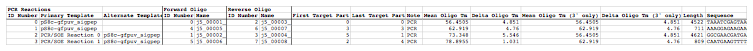
displays the assembly pieces that will be required for the assembly.
ID Number column fields: The assembly pieces are enumerated starting with "0".
Type column fields: The type of reaction from which the assembly piece was derived. This could be either "PCR", "SOE", "Annealed Oligos", or "Direct Synthesis/PCR".
Type ID Number column fields: The assembly pieces are enumerated starting with "0" separately for each of the following three types: 1) PCR/SOE, 2) Annealed Oligos, 3) Direct Synthesis/PCR.
First Target Part column fields: The first target part in the Target Part Ordering/Selection/Strategy subsection above, that is embedded within the assembly piece.
Core Target Part column fields: The target part that is either at the core of a PCR/SOE reaction derived assembly piece (i.e. not the flanking parts that were embedded in the oligo primers), or the last target part embedded within a direct synthesis derived assembly piece.
Last Target Part column fields: The last target part in the Target Part Ordering/Selection/Strategy subsection above, that is embedded within the assembly piece.
Relative Overlap Position column fields: The relative overhap position between this assembly piece, and the next. See the target part order list file documentation for more information. For linear DNA products, this field will be blank for the last assembly piece.
Extra 5' CPEC bps column fields: The number of extra bps at the 3' end of the overlap for the assembly junction preceding (5' of) the assembly piece. For linear DNA products, this field will be blank for the last assembly piece.
Extra 3' CPEC bps column fields: The number of extra bps at the 5' end of the overlap for the assembly junction following (3' of) the assembly piece. For linear DNA products, this field will be blank for the last assembly piece.
CPEC Tm Next column fields: The (CPEC) Tm of the right end of this assembly piece for the left end of the next assembly piece. For linear DNA products, this field will be blank for the last assembly piece.
Overlap with Next (bps) column fields: The number of bps at the right end of this assembly piece that were designed to anneal to the left end of the next assembly piece. For linear DNA products, this field will be blank for the last assembly piece.
Overlap with Next column fields: The DNA sequence at the right end of this assembly piece that was designed to anneal to the left end of the next assembly piece. For linear DNA products, this field will be blank for the last assembly piece.
Overlap with Next Reverse Complement column fields: The reverse complement of the DNA sequence at the right end of this assembly piece that was designed to anneal to the left end of the next assembly piece. For linear DNA products, this field will be blank for the last assembly piece.
Length column fields: The length of the assembly piece in bps.
Sequence column fields: The sequence of the assembly piece.
Here is an example Assembly Pieces (SLIC/Gibson/CPEC/SLiCE) subsection (stylized for clarity; double-click to see enlarged version):
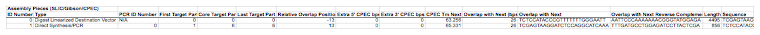
Depending on the particular assembly, a number of warning messages may follow the Assembly Pieces (SLIC/Gibson/CPEC/SLiCE) subsection. These concern Tm calculations for assembly junction overlaps longer than the Primer3 limit (currently 36 bp), or if highly homologous sequence repeats have been identified in the final assembled product.
Since Primer3 can only confidently compute Tms up to a certain length, the presented Tm for an assembly junction overlap longer than the limit is for the 3' end of the oligo up to the Primer3 length limit. Warning messages are accordingly provided for each overlap longer than the Primer3 length limit, indicating the Tm for the full length overlap as predicted by BioPerl (which may or may not be more accurate than the truncated Primer3 approximation).
Here is an example Tm calculation warning message that may follow the Assembly Pieces (SLIC/Gibson/CPEC/SLiCE) subsection:
Warning messages are also issued if homologous sequences repeats are encountered in the final assembled vector. The criteria (minimum homologous sequence length, and maximum fraction of mismatches) for determining significant homologous sequence repeats are configurable within the set of j5 parameters.
Here is an example homologous sequence repeat warning message that may follow the Assembly Pieces (SLIC/Gibson/CPEC/SLiCE) subsection (double-click to see enlarged version):
displays the length sequence of the resulting assembled plasmid.
Length column fields: The length of the resulting plasmid in bps.
Sequence column fields: The sequence of the resulting plasmid. Note that either a FASTA, Genbank, or jbei-seq format sequence file for the plasmid is also generated as part of the j5 output. The sequence presented here is just presented as a reference for the user.
Here is an example Assembly Pieces (SLIC/Gibson/CPEC/SLiCE) subsection (stylized for clarity; the oligo names are truncated as displayed):
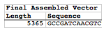
Modifications/updates made to the j5 input files: as part of the j5 assembly design process.
Master plasmids list file modifications: The resulting assembled plasmid is appended as an entry to the master plasmids list file, providing the generated plasmid name (the alias column field is left empty for the user to fill in, if desired), the contents of the plasmid (generated by sequentially listing all of the target parts assembled into the resulting plasmid, using the same notation described in the Oligo Synthesis subsection, above), the length of the resulting plasmid in bps, and the plasmid sequence. See the master plasmids list file documentation section or more information.
Master oligos list file modifications: The new oligos required to complete the assembly are appended as entries to the master oligos list file, providing the generated oligo name, the length of the oligo in bps, the full-length Tm of the oligo, the Tm of the oligo 3' sequence that was designed to anneal to the template, and the oligo sequence. See the master oligos list file documentation section or more information.
Master direct syntheses list file modifications: The new direct synthesis pieces required to complete the assembly are appended as entries to the master direct syntheses list file, providing the generated direct synthesis piece name (the alias column field is left empty for the user to fill in, if desired), the contents of the direct synthesis piece (generated by sequentially listing all of the target parts embedded into the direct synthesis piece, using the same notation described in the Oligo Synthesis subsection, above), the length of the direct synthesis piece in bps, and the direct synthesis piece sequence. See the master direct syntheses list documentation section or more information.
Example j5 output SLIC/Gibson/CPEC/SLiCE assembly file: Here is an example j5 SLIC/Gibson/CPEC/SLiCE assembly output CSV file: pj5_00001.csv